《Natrue Nanotechnol》单细胞零代码复现
原文：https://mp.weixin.qq.com/s?__biz=MzAwMzIzOTk5OQ==&mid=2247518227&idx=1&sn=182a59a03bc700a3d968352e1f78e4c2&chksm=9b3cf143ac4b7855bf471a201eb67282973798a88d4fda5d93ec51018eb0a59003ac4ad410fa#rd 合集：单细胞云平台
先带大家看一眼本篇复现效果集锦：
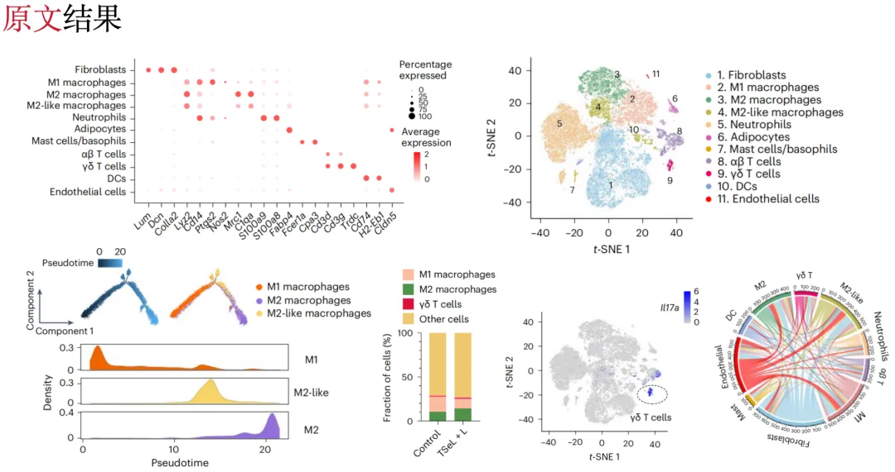
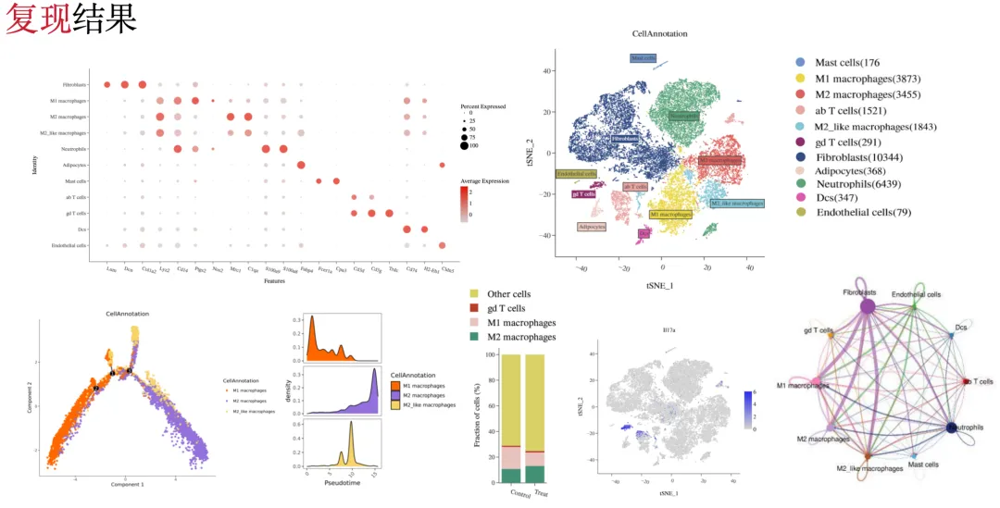
2024年5月，寻因生物单细胞转录组产品助力南开大学研究团队在《Nat. Nanotechnol》发表题为“Janus liposozyme for the modulation of redox and immune homeostasis in infected diabetic wounds”的文章，详细解读可以看今天的次条。寻因生物提供了单细胞转录组（scRNA-seq）测序 和基于SeekSoul Online云平台的数据分析服务 。
单细胞数据分析离不开好的工具。磨刀不误 砍柴功嘛，通过SeekSoul Online云平台 完成单细胞分析到底可以有多高效？让我们一起看看怎么通过云平台1小时完成高分项目文章的单细胞数据可视化图片的绘制！
点击下方链接抢先注册云平台，即刻赶超同行，率先发文：
https://seeksoul.online/index.html#/login?from=Biomamba
扫码添加客服，参加云平台精彩活动（文末可了解活动详情）～
扫一扫 添加客服微信
文章信息
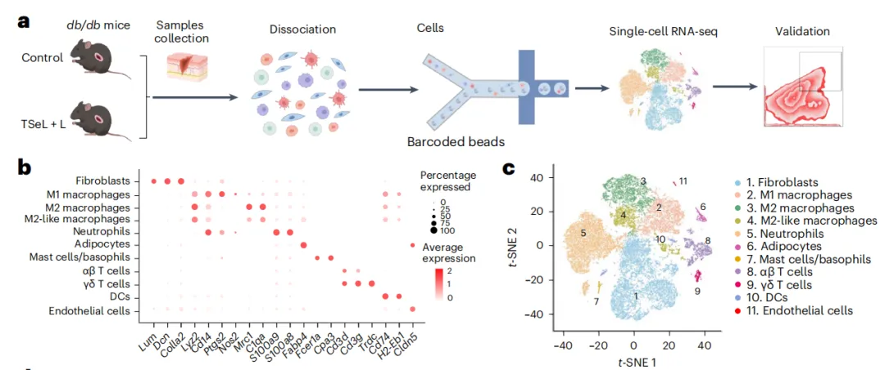
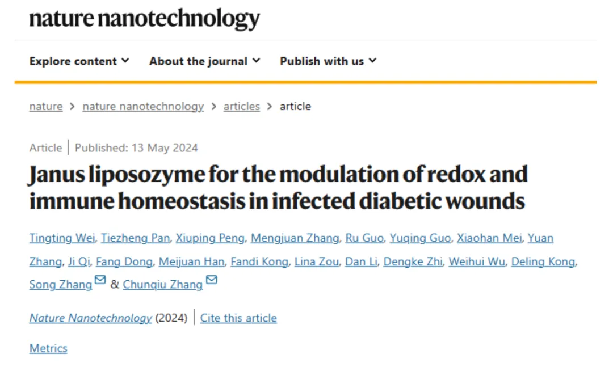
中文标题： Janus 脂质酶用于调节感染糖尿病伤口中的氧化还原和免疫稳态
发表期刊： Nat. Nanotechnol
影响因子： 38.3
合作单位： 南开大学
发文日期 ：2024年5月
文献原文解读内容回顾：项目文章IF=38.3 | Janus脂质酶：用于调节感染性糖尿病伤口氧化还原和免疫稳态
寻因生物为该研究提供单细胞转录组（scRNA-seq）测序和数据分析服务
单细胞研究结果
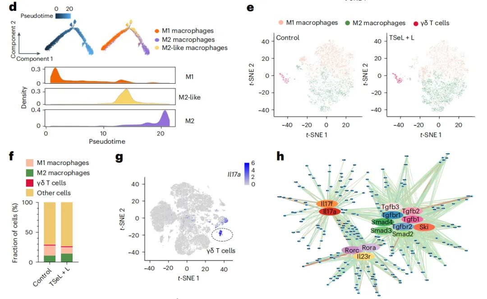
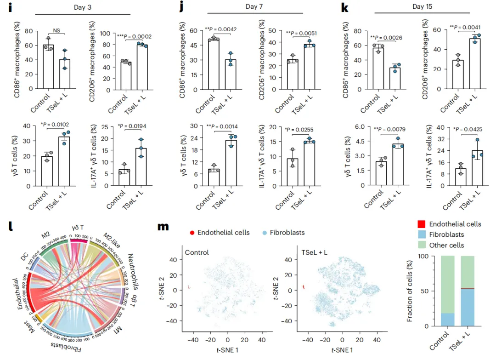
在该研究中，研究人员通过构建二型糖尿病小鼠模型，并设置对照组/TSeL治疗组进行单细胞转录组分析。结果表明（如上图），TSeL 治疗能够促进巨噬细胞从 M1 型向 M2 型极化，减少炎症反应，促进创面的愈合。同时揭示TGFβ和IL-17信号通路在伤口愈合中的重要性。
单细胞研究结果复现
Seeksoul online云平台是可以完成单细胞全套流程分析的，单细胞数据预处理（质控、过滤、整合、聚类）这里不多讲述啦，感兴趣得小伙伴可以跳转（NC文章1:1复现｜食管鳞状细胞癌的免疫抑制图谱）学习，这篇推文我们重点关注怎么用云平台轻松实现文章fig5中单细胞数据的图片展示。
1. 云平台实现Fig5c细胞注释结果的tsne图
点击【画图工具】→填写图片标题信息→选择【降维图】类型→降维类型选择“tSNE”，分组因子选择细胞注释的全部细胞类型→点击【提交】
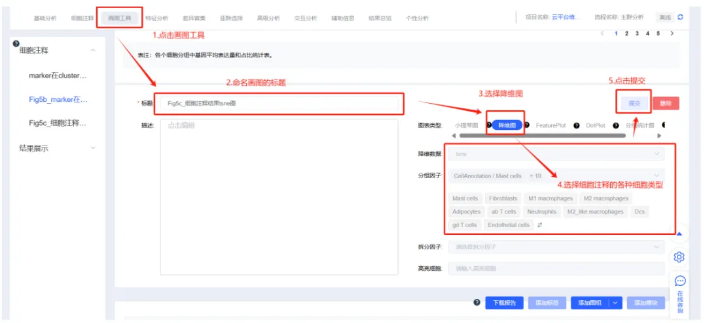
即可展示各种细胞类型的tSNE降维结果。
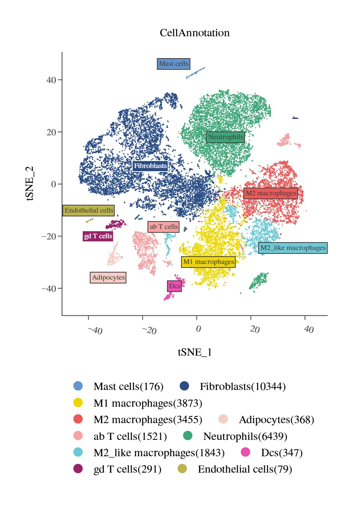
2. 云平台实现Fig5d_marker在细胞类型中的表达气泡图
点击【画图工具】→填写图片标题信息→选择【Dotplot】类型→features选择“准备好的marker基因”，分组因子选择细胞注释的全部细胞类型→点击【提交】
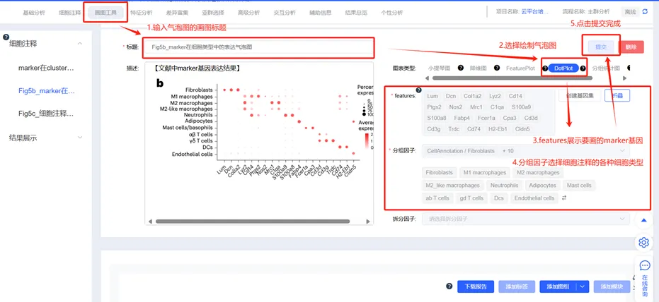
即可展示各种细胞类型的marker基因气泡图。
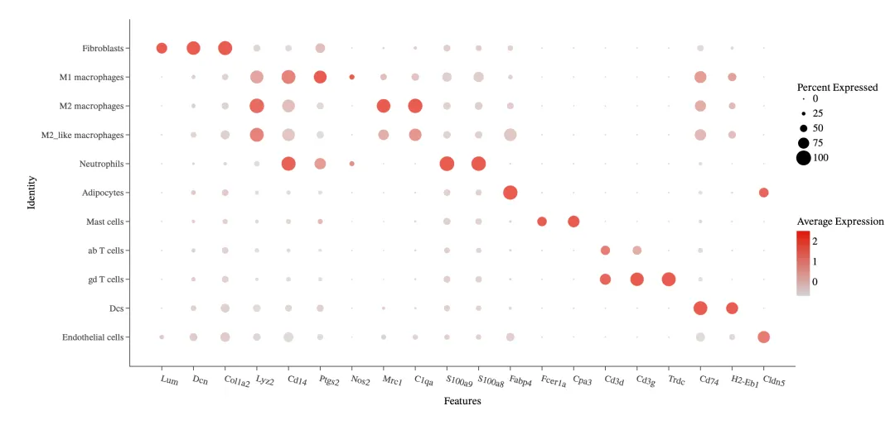
作者文章中提到TSeL可直接调控γδT细胞IL-17A、IFNY 的表达，进一步增强M1-M2 巨噬细胞极化。那么我们通过云平台怎么通过拟时序分析揭示M1-M2 巨噬细胞极化的分化趋势，以及绘制γδT细胞、M1-M2 巨噬细胞的细胞占比的堆叠柱状图和IL-17A的表达的Feature plot图呢？别着急，接下来小寻教大家逐一实现～
3. 云平台实现Fig5d_的M1和M2巨噬细胞轨迹分析结果
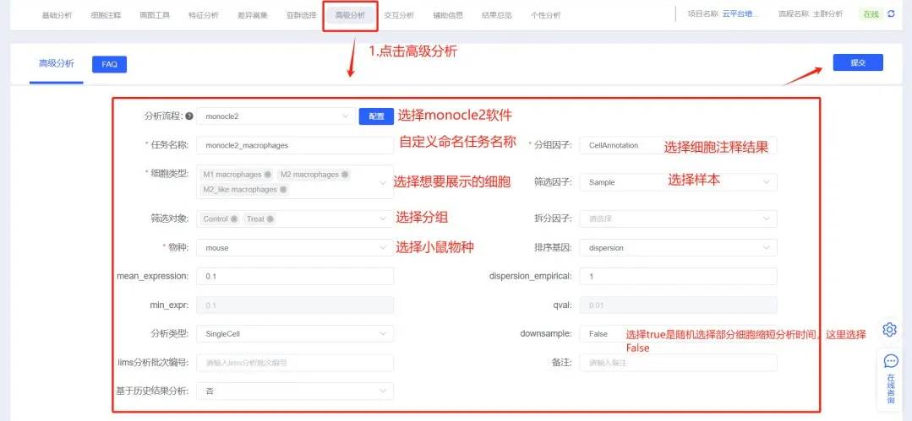
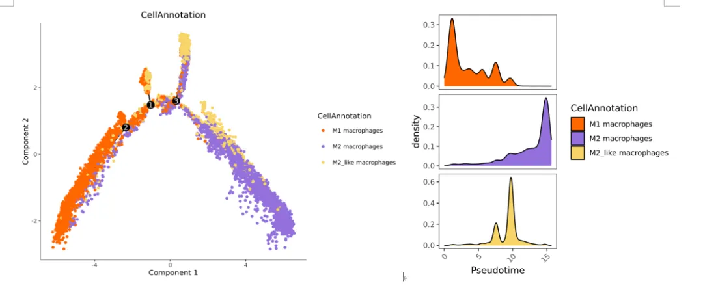
通过拟时序分析揭示不同类型巨噬细胞的过渡状态，结果表明，M1巨噬细胞在过渡状态的早期阶段占主导地位，而M2巨噬细胞出现在后期阶段。
4. 云平台实现Fig5f_γδT细胞、M1、M2 巨噬细胞和其他细胞数量占比图
点击【画图工具】→填写图片标题信息→选择【分组统计图】类型→图形选择“堆叠柱状图”→分组因子选择“γδT细胞、M1、M2 巨噬细胞和其他细胞”→拆分因子选择“样本分组结果”→点击【提交】
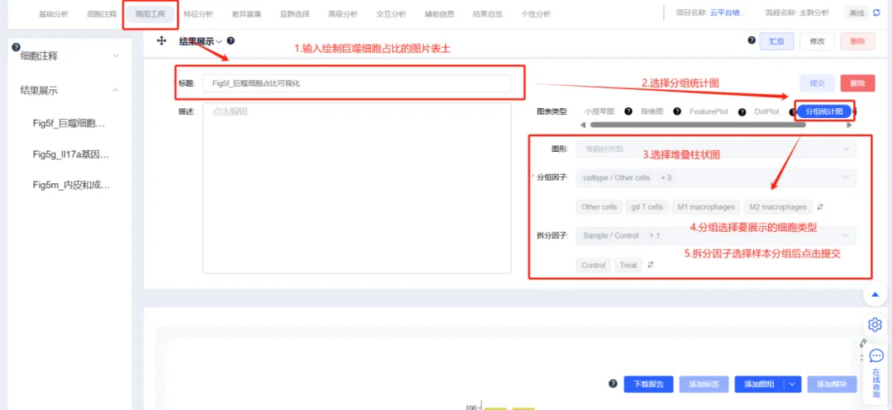
可以看出与对照组相比，Tsel组中M1巨噬细胞减少，M2巨噬细胞数量增加。
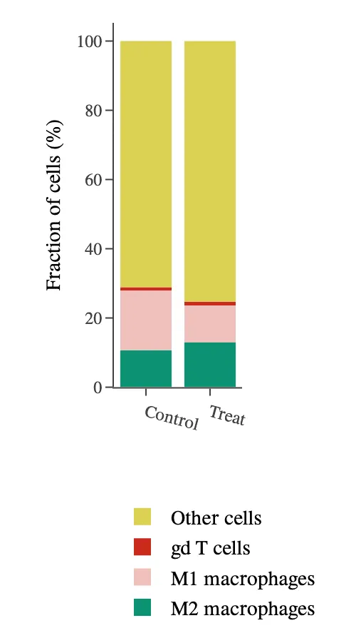
5. 云平台实现Il17a基因可视化的feature plot图
点击【画图工具】→填写图片标题信息→选择【FeaturePlot】类型→features选择“il17a基因”→点击【提交】。
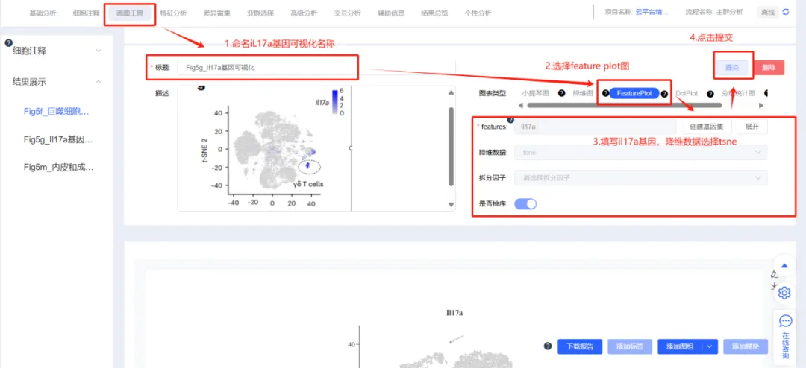
可以看出il17a基因在γδT细胞中表达。
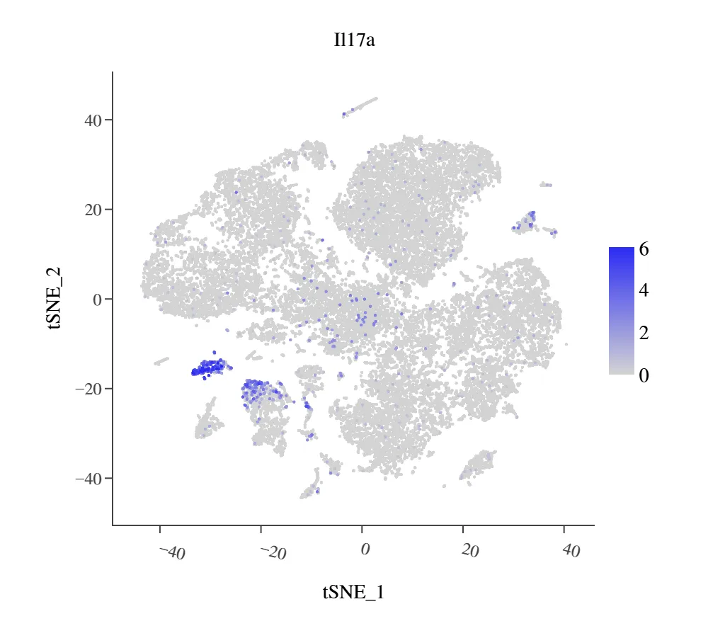
6.云平台实现fig5l的细胞通讯分析
云平台通过高级分析的cellchat软件发现γδT细胞和巨噬细胞的相互作用，而成纤维细胞、内皮细胞与免疫细胞的相互作用对促进伤口愈合也很关键。分析结果也是和文章中高度一致的。
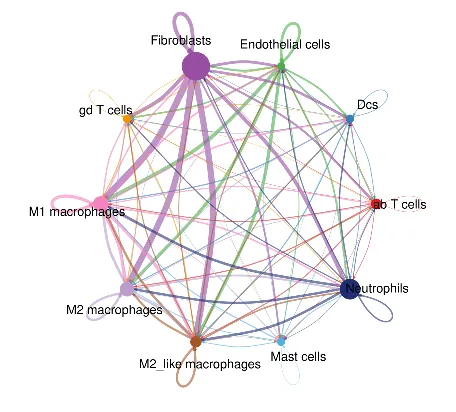
小结
除了拟时序monocle2和cellchat，云平台内置多种高级高级分析软件（见下表），如果您是生信小白，想2周内完成自己单细胞数据的标准和高级全套分析，加速科研周期，请联系下方微信客服或扫码二维码进群即可了解更多的云平台信息～更有精彩活动等你来参加！
| 高级分析 | 肿瘤细胞判定（InferCNV和CopyKAT） |
|---|---|
| 拟时序分析（Monocle2和Monocle3） | |
| 细胞通讯分析（CellphoneDB） | |
| 转录因子分析（pySCENIC） | |
| 细胞分化潜能分析（CytoTRACE） | |
| 轨迹分析（scVelo） | |
| 基因集打分富集分析（GSVA） | |
| 克隆分布分析（VDJ测序数据分析） | |
| 克隆扩增/收缩分析（VDJ测序数据分析） | |
| BCR序列结构分析（VDJ测序数据分析） | |
| TCR抗原表位注释分析（VDJ测序数据分析） |
扫码 添加客服微信 扫码进交流群

参考文献：
Wei, T., Pan, T., Peng, X. et al. Janus liposozyme for the modulation of redox and immune homeostasis in infected diabetic wounds. Nat. Nanotechnol. (2024). https://doi.org/10.1038/s41565-024-01660-y
关于寻因生物

北京寻因生物科技有限公司（简称寻因生物）——专注单细胞测序技术自研、创新的国产技术平台。秉承“用技术温暖生命，预见未来”的企业愿景，致力成为您身边最值得信赖的单细胞创新合作伙伴。
寻因生物于2018年成立，历时6年，已完成覆盖单细胞仪器、实验、建库、分析全链条自研产品20 余项，提供单细胞科研全周期服务&特殊样本解决方案50 余种。
专注单细胞表达谱功能的单细胞3’转录组 产品及助力免疫方向研究的单细胞免疫组 产品，已实现与国际性能比肩。继而创新推出了真·单细胞分辨率的单细胞空间转录组； 实现突变、可变剪切、lnc等更多信息更多物种信息检出的单细胞全序列转录组 以及实现FFPE样本更长RNA覆盖的单细胞FFPE转录组 等创新技术，从而覆盖肿瘤、免疫、感染、疾病发生发展和发育分化等研究方向。
2023年，寻因生物作为牵头单位的“十四五”国家重点研发计划“前沿生物技术”重点专项成功立项。北京市多次颁发授予寻因生物专精特新中小企业、高新技术企业证书、中关村高新技术企业等荣誉认证。
寻因生物致力于单细胞技术普适化标准和应用，积极建立全球化视野，现已与中国大陆、香港、澳大利亚、德国、荷兰、法国、西班牙、俄罗斯等全球十余个国家地区，1000+ 研究单位建立合作。
完成100+ 单细胞全体系知识产权布局，22 项自主知识产品体系搭建，9项产品获得了欧盟数据EUDAMED注册认证。技术平台获得涵盖医疗器械、质量、环境安全、职业健康和信息安全的五项管理体系认证。
寻因生物，通过不懈努力将管理体系达到国际标准，持续深耕创新，有能力不断提供稳定、高标准的产品和服务，为生命科学工作者提供更优科研工具，助力项目开花结果。
END